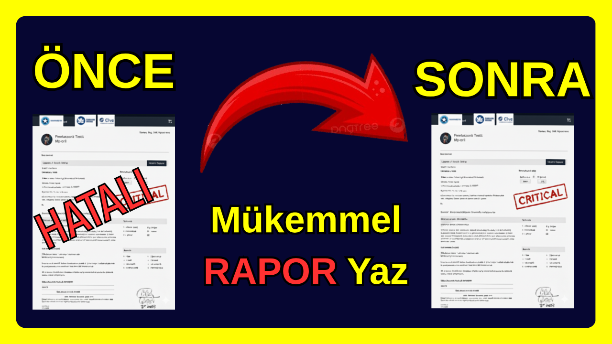

🛡️ Penetration Test Raporu Nasıl Yazılmalı?
Siber güvenlikte en önemli konularan biri, iyi penetrasyon testi raporu yazmaktır. Red team çalısanları olarak isinizi ne kadar iyi yaparsanız yapın, ne kadar kritik zafiyetler bulursanız bulun isin en sonunda bunları bi penetrasyon testi raporu ile sunmanız gerekir. Ve sirketlerin sizle çalısmaya devam edit etmeyeceğinide bu raporunuz belirler. Bu isin sonundaki rapor sizin müsterinize sattığınız ürününüzdür bu yüzden rapor yazmak pentestteki en zor ve öğrenilmesi en sart konudur.
Konuyla ilgili Youtube videom
Bloğa Baslamadan Önce
Bu blogada anlattığım format benim kendi kullandığım raporlama formatıdır github üzerinden sizde bu formata ulasıp kendinize göre değistirebilirisniz. Bunu yapabilmeniz için formatı ".pdf" formatı yerine ".odt" formatı ile yayınladım. Yazı içersinde göreceğiniz her baslık ise bence bir raporun içinde olmazsa olmz olan seylerdir yukarı kısımdaki içindekiler kısmından linklerine bakabilirsiniz.
Markanızı Hatırlatan Bir Kapak
Bu kısım her ne kadar çokça atlansada olduka önemlidir. Yazdığınız raporun ilk sayfasında markanızı yada freelencer olarak çalısıyorsanız sizi tanıtacak bir imzanız olmalıdır olmalıdır. Aynı zamanda raporun içinde sayfa içindede logonuzu rahatsız etmicek sekilde barındırabilirisiniz.
İçindekiler Kısmı
Eğer elektronik ortamdan gönderiyorsanız bölümle sayfayı linklemeyi unutmak aptallık olucaktır. Aynı sekilde kesinlikle sayfaların numarasını da içindekiler ksmına kesinlike koymlısınız eğer raporunuz çıktı alırsa bu numaralar hayat kuratarır. Baskasında görmediğim ama benim olmazsa olmazım olan bi kuralı sizinle paylasıcağım. Bizim raporlarımızı hem mühendisler hemde teknik bilgisi daha az olan yöneticiler okur ve biz eğer içindekiler kısmındaki yazıları buna yönelik olarak renklendirirsek yöneticiler nereleri okumaları gerektiğini bilirler. Ben bu renklendirmeyi kendi taslağımda da görebileceğiniz üzere mavi ve kırmızı renkle yapıyorum yöneticiler kırmızı yazı ile yazılmıs bölümleri okuyorlar teknikerlerde mavi renkle olanları böylece yöneticilerin kafa karısıklıpı çoğu durumda engelleniyor.
Yönetici Özeti
Yönetici özeti raporumuzdaki en önemli iki yerden biridir. Raporun bu kısmını yöneticiler okuyacağı için teknik bi dilden kaçınmalıyız ve kesinlikle yazım ve noktalama isaretlerine dikakt etmeliyiz(sakın yazım ve noktalama isaretlerini düzeltmesi için cloudtaki ai modellerini kullanmayın bunun sonucunda sirketin zafiyetlerini dıs bi faktörle paylasmıs sayılırsınız.). Bu bölümde olabildiğicne teknik olmadan kapsam beyanı yapmalı ve bulduğumuz zafiyetleri bildirmeliyiz. Burada zafiyetlerimizi bildirirken zafiyetin ismini söylemek yerine sonucunu açıklamak çok daha etkilidir.
Bulgu Özeti
Bu kısım hem teknikerler hemde yöneticiler tarafından okunabilir. Burada zafiyetleri detaylıca anlaatmak yerine kısaca nerde bulunduğundan ne olduğundan ve düzeltilmezse ne ile sonuçlanacağından bahsetmeliyiz. Eğer daha detaylıca ne olduğunu öğrenmek isterlerse diye en altına da bulgunun ne olduğunu anlatan bi kısım eklemeliyiz.
Öneri ve Tavsiye
Bu bölümde zafiyetlerinizi yeniden açıklaamanıza gerek yoktur nasıl kapatılacağına dair soyut öneriler vermelisiniz.
- x Güvenlik artırılmalıdır
- ✓ İlgili Fonksiyona kullanıcı kimliği doğrulama fonksiyonu eklenmelidir
Zafiyetin kritikliğine göre öncelik sırası verin. Eğer zafiyet açıkça isimledirilemisse nasıl kapanacağına dair malalelerin linkini koyabilirsiniz. Bu bölümde yapıcı olmalısınız yıkıcı değil
Ciddiyet Skalası
Herseyden önce ciddiyet yada önem skalası yazarken önemli olan müsterinizin için neyin daha önemli olduğudur. Bu yüzden sirketle bu konuda kesinlikle konusmalsınız. Konustuktan ve sirketin neye önem verdiğinzi anladıktan sonra çesitki renklerle ciddiyet sklasını olusturunuz. sklananızda zafiyetleri açıklamak yerine sadece ismini söylemeniz yeterlidir aynı zamand bulgu özeti kısmınada linkleyebilirsiniz.
Kapsam Beyanı
Test edilecek varlıkları, sınırları, izin verilen metodları, İzin düzeyi, erisim tipi(white; gray; black box),hariç tutulan teknikler ve hariç tutulan noktaları kesinlikle lsita haline yazılız. Buraya pentest öcnesinde imzalanan anlasmanızı linkleyebilrisiniz. Bu kurallara uymazsanız hukuki problemler yasayabileceğinizisöylemem gerek yoktur tabikide.
Final Raporu
Burası daha çok bi baslıktır bu bölmden sonra teknik kısma geçtiğimizi anlatır.
Metodoloji
Bu bölümde nasıl hacklediğimizi değil hacklerken hangi sırayı izlediğimiz önemlidir (OSSTMM NIST SP800-115 vb)
Bilgi Toplama
Enumetiondan daha basit bi sekilde sadece hedefler çıkartılır. Yani "Hedef bulunmaya çalısılır hedeflerin bilgileri değil."
Enumetion
Bu bölümde hedeflere dair bilgiler vardır bolca ss konulmalıdır. Olabildeğince çok tarama ssi olmalıdır. bilgisayarladaki siletim sistemlerinden web servislerine uygulamaların yazıldığı programlama dilinden o dilin sürümüne ne kadar bilgi o kadr iyidir.
Zafiyet Değerlendirilmesi
Bu bölümde zafiyetleri olabileceğinin en teknik haliyle yazarsınız, neden bu açığın olustuğunu yazmalısınız. Yine bu bölümdede zafiyetlerin daha genel açıklamalarının olduğu makalelerin linklerini koyabiliriz. Ve bu bölümdeki en önemli amaç raporu okuyan kisininde bizim yaptığımız seyleri yaparak aynı zafiyeti exploit edebilmesidir iste bu yüzden bolca ss ve terminaldeki codeleri kopyalanabilir sekilde rapora dahil etmelisiniz.
Exploit
Bi önceki bölümde zafiyetleri teker teker açıkladık ama burda adım adım yaptığımız bütün hamleleri yazıcağız ve nasıl hacklediğimizi anlatıcağız böylece hem ayrı ayrı zafiyetlerin neler olduğunu anlasılacak hemde bütünsel bi bakıs açısıyla olaylar görülecek.
Home Clearing
Pentestte ev temizleme kavramı sızma esnasında sisteme yüklenen payloadların, olusutrulan hesapların ve benzeri yapılan değsikliklerinn silinip verilen yetkilerin geri alınmasınıdır burası değisken değil bütün raporalrda aynıdır. Bunu müsteriye bildirmek çoğu durumda iyi bi görünüm sağlar